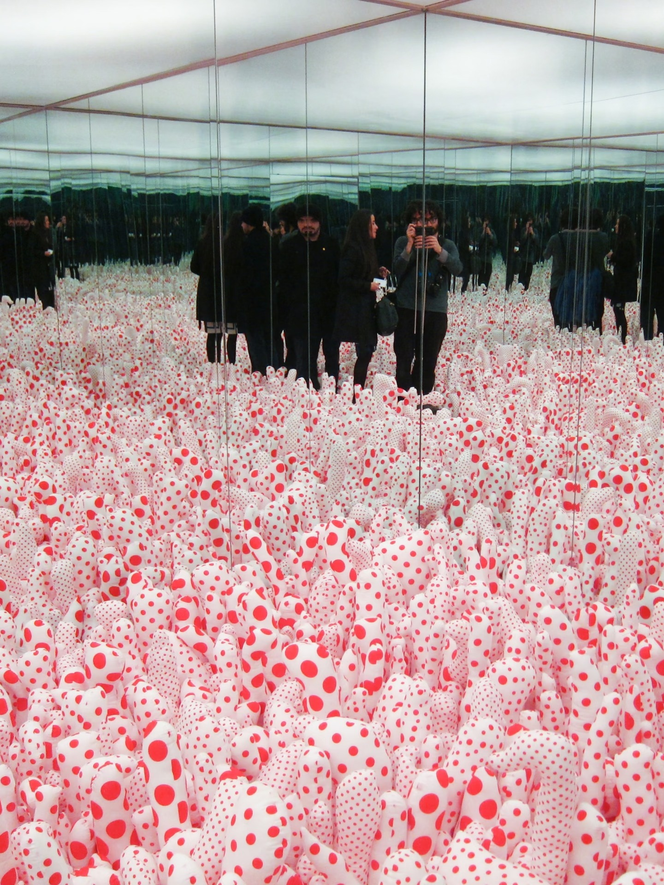
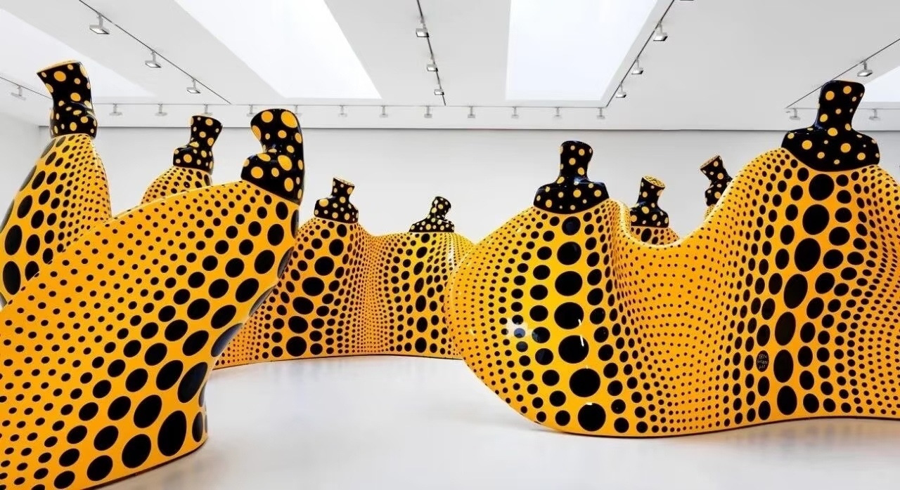
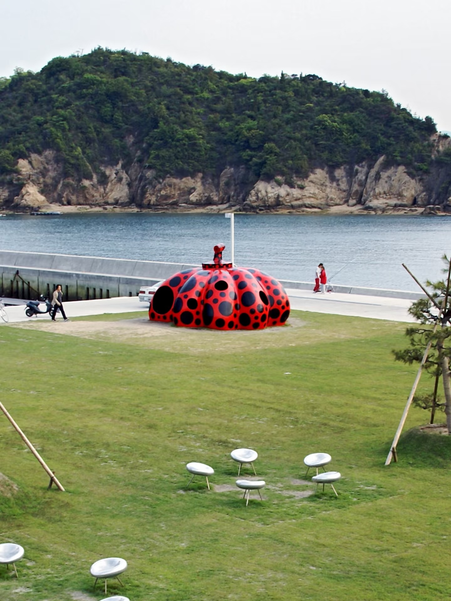
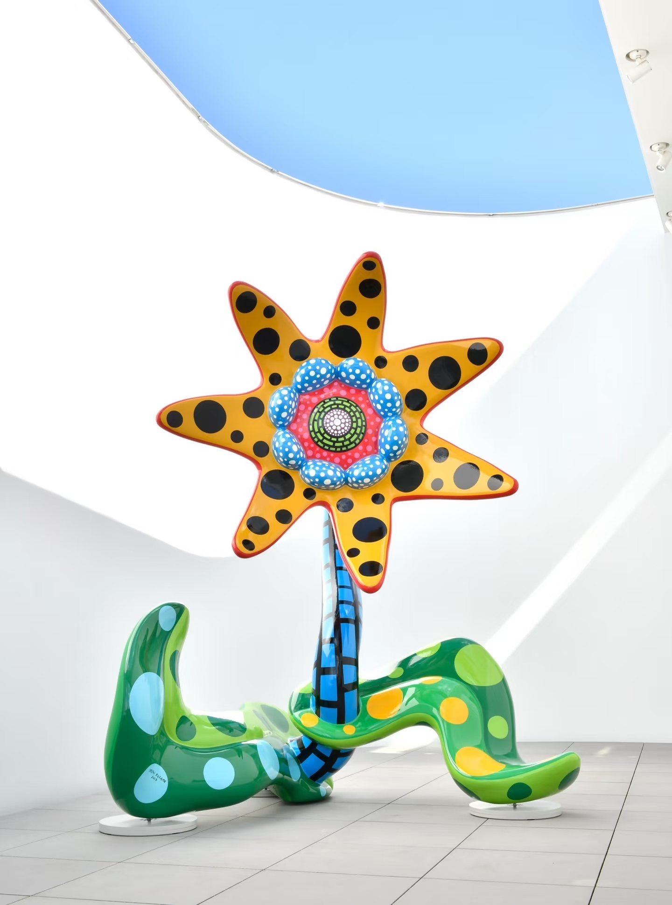
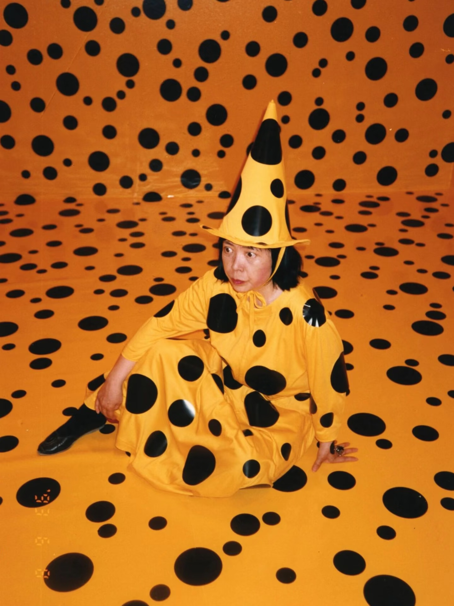
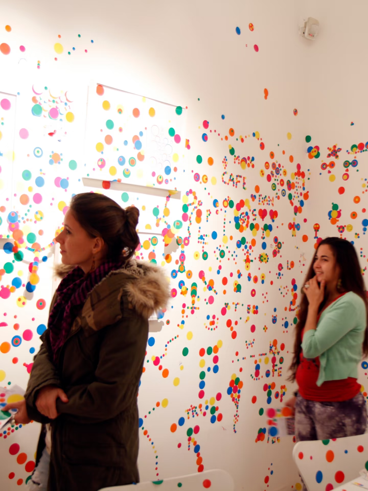
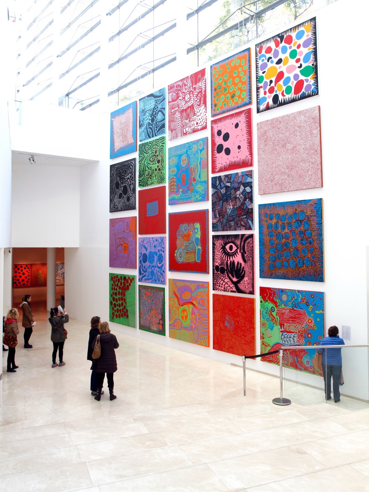
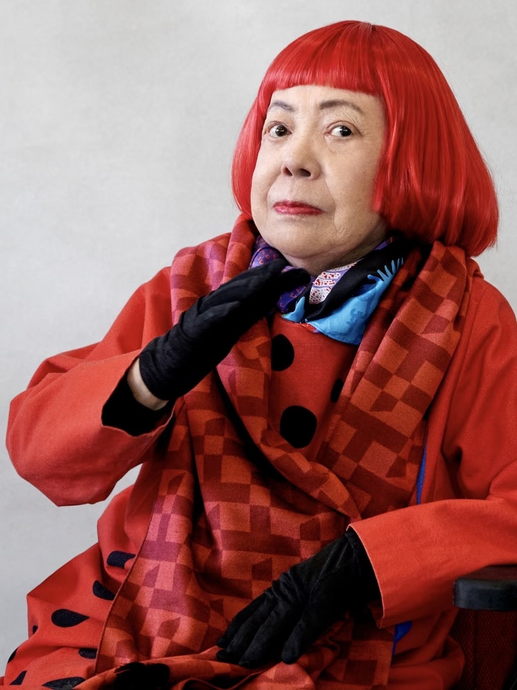

松本 · 早年
出生于日本长野县松本市。童年时期开始绘画，并逐渐发展出波点与网状图案。
A MEMORY OF INFINITY
波点、重复、镜像与无限。
从一个圆点，进入一个不断扩张的世界。
02 / LIFE
草间弥生的艺术实践横跨绘画、雕塑、装置、文学与表演。她长期使用重复、增殖、镜面和波点，构成独特的视觉语言。
出生于日本长野县松本市。童年时期开始绘画，并逐渐发展出波点与网状图案。
赴美国后在纽约生活与创作，发展出网络绘画、软雕塑以及空间装置等实践。
镜面、灯光、软雕塑和环境作品不断扩展“重复”的尺度，观者开始进入作品内部。
回国后继续绘画、写作与大型装置创作，“Infinity Mirror Room”系列逐渐成为重要实践。
东京草间弥生美术馆于2017年开馆。她持续创作至生命晚期，并留下跨越多个媒介的作品与文字。
03 / DOTS
移动鼠标：推动波点。
点击：复制波点。
连续点击：让空间不断增殖。
当一个简单的圆被不断复制，它开始形成节奏、覆盖和空间。草间弥生把这种持续的重复发展为自己的艺术语言。
04 / WORKS
点击作品卡片进入档案模式。以绘画、雕塑、装置与影像为入口，观察波点如何从一个图案扩展成完整的艺术语言。

01镜像 / 无限 / 空间

02波点 / 形体 / 环境

03南瓜 / 重复 / 日常意象

04器物 / 表皮 / 重复

05身体 / 波点 / 消融

06图案 / 色彩 / 符号

07装置 / 环境 / 体验
 08
08观看 / 参与 / 无限
05 / ARRAY ARCHIVE
INSTALLATION / MIRROR / INFINITY
向下滑动，作品从一个紧密的圆点逐渐展开成阵列。每一张作品卡都成为无限视觉中的一个节点。
06 / INFINITY
移动鼠标，让镜屋产生视差。点击一次，让波点复制；再点击一次，让空间继续增殖。

07 / ABOUT THE ARTIST
前卫艺术家、小说家。她以波点、网状绘画、软雕塑、镜面装置等视觉语言，持续探索重复、无限与自我消融。
草间弥生1929年出生于日本松本。1957年赴美国，随后在纽约开展创作；1973年返回日本。她的实践跨越绘画、雕塑、装置、文学与表演，并持续围绕“无限”的主题展开。2026年8月14日，她于东京去世，享年97岁。